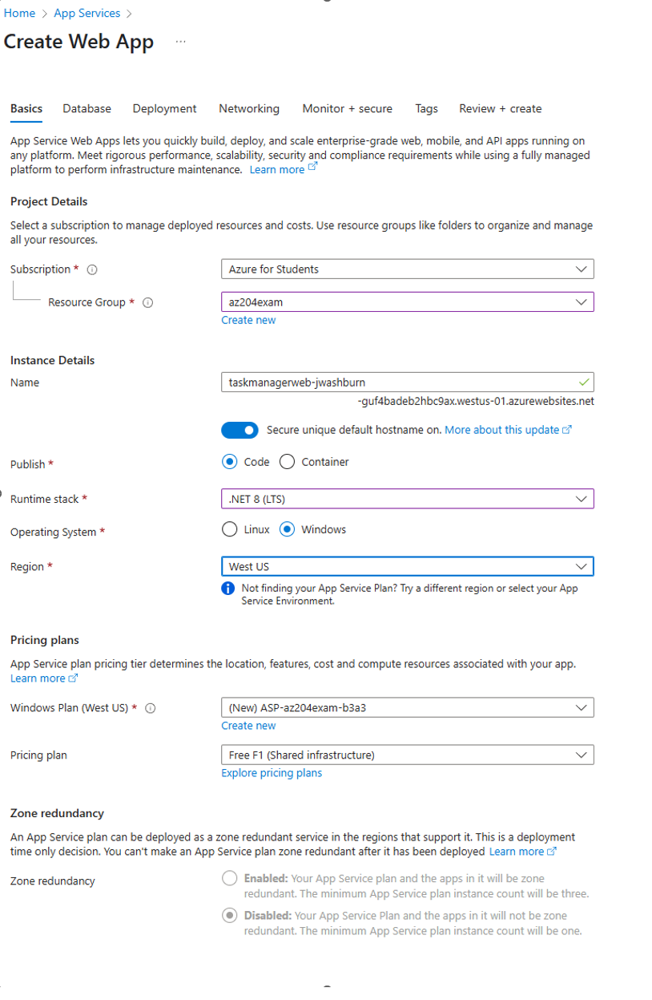

Implement Azure App Service Web Apps
Web App to hit the AZ-204 Exam Topics:
- Create an Azure App Service Web App
- Configure and implement diagnostics and logging
- Deploy code and containerized solutions
- Configure settings including Transport Layer Security (TLS), API settings, and service connections
- Implement autoscaling
- Configure deployment slots
Prerequisites
- .NET SDK 8.0 (Install via winget:
winget install Microsoft.DotNet.SDK.8) - Azure CLI (Install)
- Azure Functions Core Tools (Install)
- Azure Subscription (Free tier or $200 credit recommended for minimal costs)
- Existing Resource Group
Set Up Azure App Service
- In the Azure Portal, create a new App Service:
- Use the Free F1 tier to avoid costs.
- Note the app name (e.g.,
taskmanagerweb-yourname) and resource group (e.g.,az204exam). - Check out the tabs for learning experience, we are leaving them default

2. Create a .NET Core MVC app locally:
bash
dotnet new mvc -o TaskManagerWeb
cd TaskManagerWeb
dotnet run
3. Verify the app runs at http://localhost:port
4. Launch your editor of choice:
bash
code.
5. Browse into the Models directory under TaskManagerWeb.
6. Add TaskItem.cs:
csharp
namespace TaskManagerWeb.Models
{
public class TaskItem
{
public string id { get; set; } = System.Guid.NewGuid().ToString();
public string? Title { get; set; }
public string? Description { get; set; }
public string? DueDate { get; set; } // Changed to string
}
}
7. Update Controllers/HomeController.cs to handle tasks (in-memory for now):
```csharp
using Microsoft.AspNetCore.Mvc;
using TaskManagerWeb.Models;
using System.Collections.Generic;
namespace TaskManagerWeb.Controllers
{
public class HomeController : Controller
{
private static List<TaskItem> _tasks = new List<TaskItem>();
public IActionResult Index()
{
return View(_tasks);
}
[HttpPost]
public IActionResult Create(string title, string description, DateTime dueDate)
{
var task = new TaskItem
{
Title = title,
Description = description,
DueDate = dueDate.ToString("yyyy-MM-dd") // Convert DateTime to string
};
_tasks.Add(task);
return RedirectToAction("Index");
}
}
}
```
Modify the Home Page View to Add a Form
The view (Index.cshtml) defines the UI, including the form for adding tasks and a list to display them. 1. Open Views/Home/Index.cshtml. Replace the default content with:
@model List<TaskManagerWeb.Models.TaskItem>
<!DOCTYPE html>
<html lang="en">
<head>
<meta charset="utf-8" />
<meta name="viewport" content="width=device-width, initial-scale=1.0" />
<title>Task Manager</title>
<style>
<text>
body {
font-family: 'Segoe UI', Arial, sans-serif;
background-color: #f4f6f9;
color: #333;
margin: 0;
padding: 20px;
line-height: 1.6;
}
h1 {
color: #2c3e50;
text-align: center;
margin-bottom: 20px;
}
h2 {
color: #34495e;
margin-top: 30px;
border-bottom: 2px solid #3498db;
padding-bottom: 5px;
}
form {
background: #fff;
padding: 20px;
border-radius: 8px;
box-shadow: 0 2px 10px rgba(0, 0, 0, 0.1);
max-width: 500px;
margin: 0 auto;
}
div {
margin-bottom: 15px;
}
label {
display: block;
font-weight: 600;
margin-bottom: 5px;
color: #2c3e50;
}
input[type="text"],
textarea,
input[type="date"] {
width: 100%;
padding: 10px;
border: 1px solid #ccc;
border-radius: 4px;
font-size: 14px;
box-sizing: border-box;
}
textarea {
resize: vertical;
min-height: 100px;
}
input:focus,
textarea:focus {
outline: none;
border-color: #3498db;
box-shadow: 0 0 5px rgba(52, 152, 219, 0.3);
}
button {
background-color: #3498db;
color: #fff;
padding: 10px 20px;
border: none;
border-radius: 4px;
font-size: 16px;
cursor: pointer;
transition: background-color 0.3s;
}
button:hover {
background-color: #2980b9;
}
ul {
list-style: none;
padding: 0;
max-width: 600px;
margin: 20px auto;
}
li {
background: #fff;
padding: 15px;
margin-bottom: 10px;
border-radius: 6px;
box-shadow: 0 1px 5px rgba(0, 0, 0, 0.1);
display: flex;
justify-content: space-between;
align-items: center;
}
li.no-tasks {
color: #7f8c8d;
font-style: italic;
text-align: center;
box-shadow: none;
}
.task-info {
flex-grow: 1;
}
.task-info strong {
color: #2c3e50;
}
@@media (max-width: 600px) {
form, ul {
padding: 10px;
}
li {
flex-direction: column;
align-items: flex-start;
}
}
</text>
</style>
</head>
<body>
<h1>Task Manager</h1>
<form asp-action="Create" method="post">
<div>
<label>Title:</label>
<input type="text" name="title" required />
</div>
<div>
<label>Description:</label>
<textarea name="description"></textarea>
</div>
<div>
<label>Due Date:</label>
<input type="date" name="dueDate" required />
</div>
<button type="submit">Add Task</button>
</form>
<h2>Tasks</h2>
<ul>
@if (Model != null && Model.Any())
{
foreach (var task in Model)
{
<li>
<div class="task-info">
<strong>@task.Title</strong> - @task.Description
<br />
<small>Due: @(task.DueDate ?? "No due date")</small>
</div>
</li>
}
}
else
{
<li class="no-tasks">No tasks yet.</li>
}
</ul>
</body>
</html>
- Test the app works locally
dotnet run
Deploy to Azure App Service
- Push the app you created up to the Azure App Service we previously made.
az webapp up --name taskmanagerweb-yourname --resource-group az204exam --sku F1 --location yourlocation --runtime "dotnet:8"
- Test the app in your browser. You should be able to get the URL from the App Service Overview page
Configure Settings (TLS, API Settings, Service Connections)
- Enable TLS:
- In the Azure Portal, go to your App Service (
taskmanagerweb-yourname). - Click TLS/SSL settings.
- Turn HTTPS Only to On > Save.
-
Test: Visit
http://taskmanagerweb-yourname.azurewebsites.net(it should redirect to HTTPS). -
Add App Settings:
- Go to Configuration > Application settings.
- Click New application setting.
- Name:
CosmosDBConnection, Value:placeholder(we’ll use this later for Cosmos DB). -
Click OK > Save > Continue to restart the app.
-
Set Up Managed Identity:
- Go to Identity > System assigned.
- Turn Status to On > Save.
-
Note: This lets the app securely connect to other Azure services (like Cosmos DB) without passwords later.
-
Verify:
- Open
https://taskmanagerweb-yourname.azurewebsites.netand confirm it works. - Check Configuration in the Portal to see
CosmosDBConnection. - No code changes needed, but the app is ready for future connections.
Implement Autoscaling
Note: Autoscaling requires a Standard (S1) or higher tier. You will have to chase this thread on your own
Configure Deployment Slots
Note: Deployment slots need a Standard (S1) or higher tier, not Free F1. You will have to chase this thread on your own
Next Steps
- Add diagnostics and logging (Application Insights, logs).
- Later, connect to Cosmos DB for task storage and function app for triggers.
- Do everything again, but this time use the CLI to build the Web App.
- If you are going to take break, you could clean up here, but the next section builds on what we have done here.